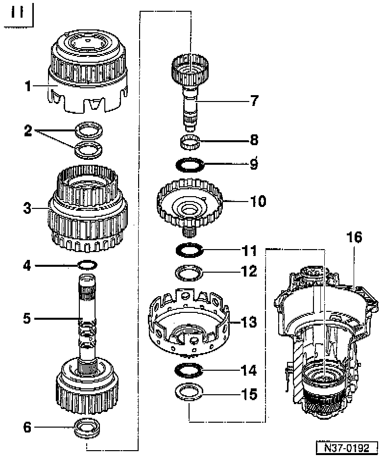

Remove/Install

NOTE: Refer to Planetary Gearbox Disassembly/Assembly
COMPONENT NOTES AND INFORMATION
1 Reverse gear clutch -K2
- Disassembling and assembling, refer to Disassemble/Assemble.
2 Shim
- Determining thickness
- Adjusting clutch play between -K1- and -K2-. Adjustments
- 1 or 2 shims can be installed
3 1st to 3rd gear clutch -K1
- Disassembling and assembling, refer to Disassemble/Assemble.
4 Seal
- Always replace
5 4th gear clutch -K3- with turbine shaft
- Disassembling and assembling., refer to Disassemble/Assemble.
6 Axial needle bearing with washer
- Axial needle bearing faces toward small drive shaft
7 Small drive shaft
8 Needle bearing
9 Axial needle bearing
10 Large drive shaft
11 Axial needle bearing
12 Axial needle bearing washer
- With shoulder
13 Large sun gear
14 Axial needle bearing
15 Axial needle bearing washer
16 Transmission housing with free wheel and circlips installed